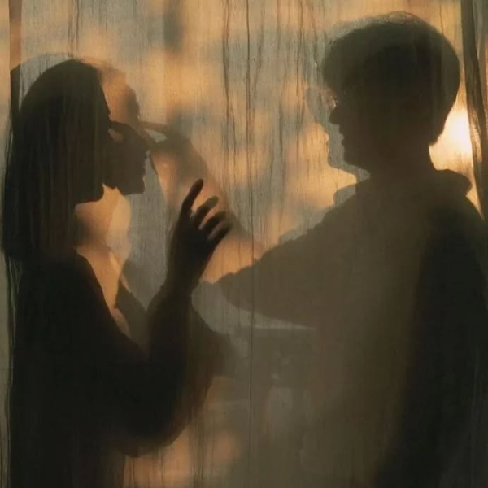

ABOUT YOU
Hi Stranger! we don't know each other. Not yet, but I do know this, if the universe has placed you in front of my screen, there must be something about you worth admiring in silence.
Maybe you’re the kind who reads between lines, not just the lines. Maybe you’ve learned to walk away quietly when things don’t feel right, and I respect that strength more than words can say.
I don’t expect you to be perfect. I just hope you’re still a little soft inside. That despite the masks the world forced you to wear, there’s still a heart that believes in real things, in slow moments, warm laughter, and in the kind of love that doesn’t need loud promises.
If that’s who you are, then you’re already the kind of beautiful I’ve always wanted to meet, even as a stranger.

Somewhere beyond these frames, there’s a story waiting to be told, quiet, unspoken, but real. If you feel it too, maybe we don’t have to be strangers forever.